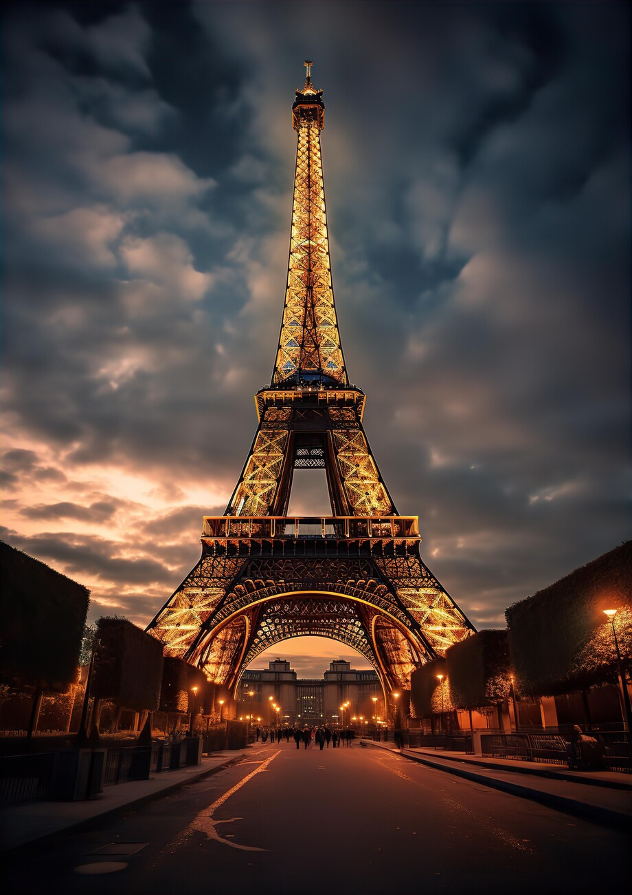

Visit the Eiffel Tower
The Eiffel Tower, an iconic symbol of Paris and one of the most recognizable structures in the world,
stands as a testament to architectural innovation and artistic design. Completed in 1889,
it was initially constructed as the centerpiece for the 1889 Exposition Universelle,
a world's fair held to celebrate the 100th anniversary of the French Revolution.